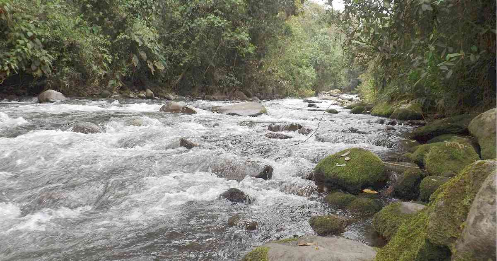

El río Otún es una de las principales fuentes hídricas del departamento de Risaralda, Colombia. Nace en el Parque Nacional Natural Los Nevados, a más de 3.900 metros sobre el nivel del mar, en la laguna del Otún. Recorre páramos, bosques de niebla y tierras cafeteras hasta llegar a la ciudad de Pereira, donde abastece de agua potable a gran parte de la población. A lo largo de su trayecto, el río Otún es hábitat de diversas especies de flora y fauna, y forma parte de áreas protegidas como el Santuario de Fauna y Flora Otún Quimbaya, lo que lo convierte en un recurso natural de gran valor ecológico, turístico y cultural para la región.

Para llegar al río Otún desde Pereira en vehículo particular o taxi, debes tomar la vía hacia La Florida, una zona rural a unos 15 km del centro. El recorrido dura entre 40 y 50 minutos. Desde allí puedes continuar hasta la entrada del Santuario Otún Quimbaya, uno de los mejores accesos al río.